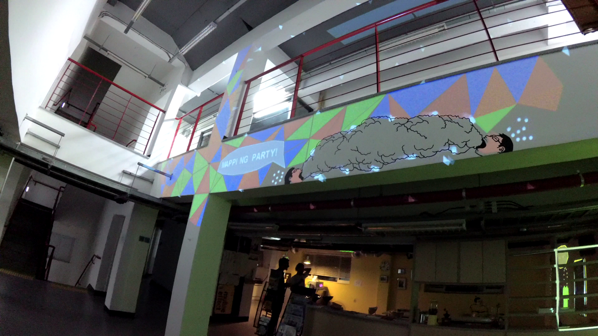
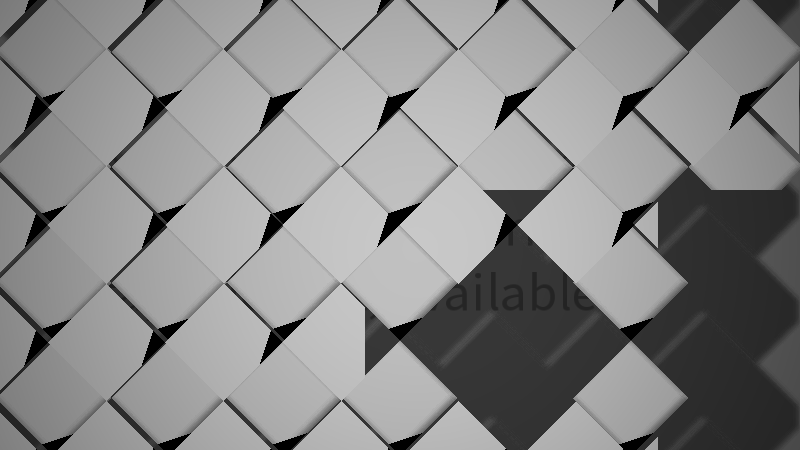
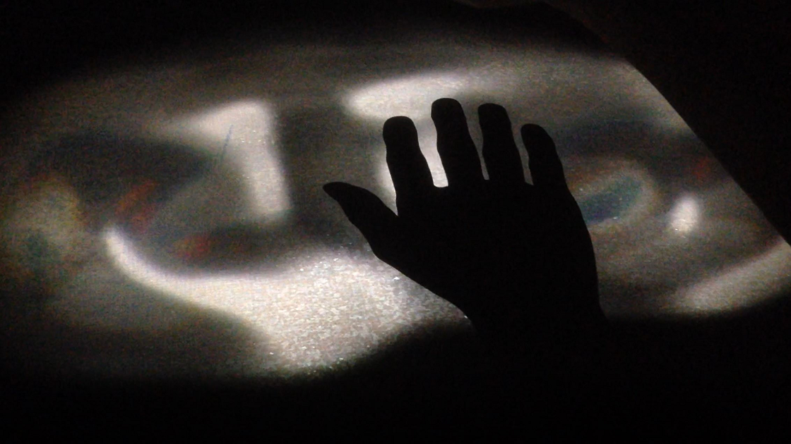
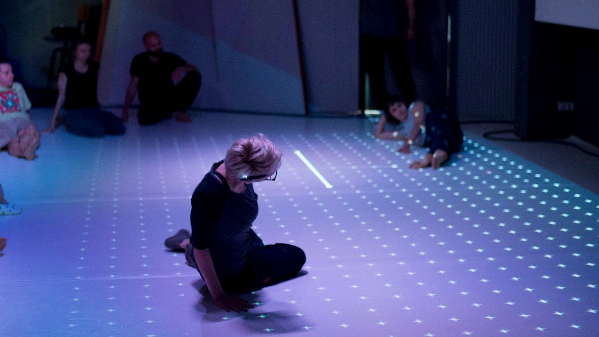
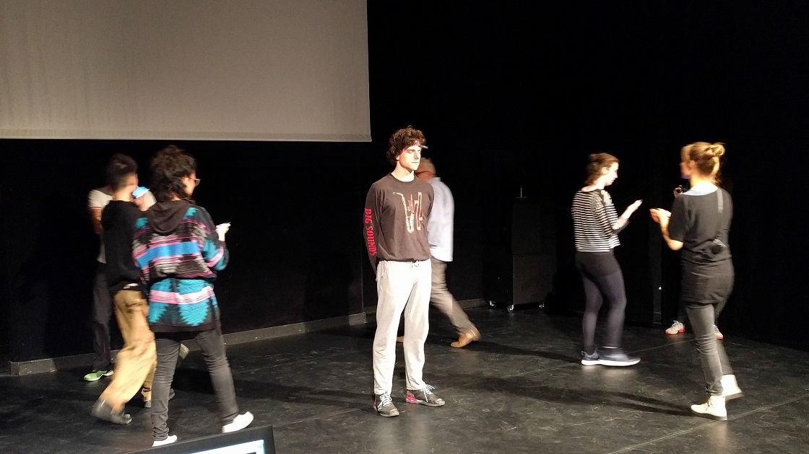
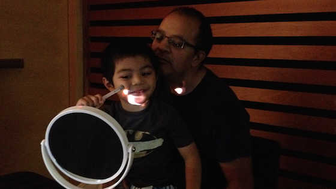

Projects

Artist in Residence (with Evelyne Drouin)

Seoul Art Space Geumcheon, Artist in Residence 2018 (Seoul, South Korea)
Call Stack (with Janine Harrington)

Favoriten Festival Digitale Performance, 2018 (Dortmund, Germany)
Passing Light (with Michael Montanaro, Jerome Delapierre, and Tatev Yesayan)

Solar Decathlon 2018 (Dezhou, China)
MAPP_MTL Invisible Exhibition Micro-Mapping, 2017 (Montréal, Canada)
Path(re)finder

NOVA: Choreographic Coding Lab + Pathfinder (Bucharest, Romania)
Studio 303 Artist in Residence, 2017 (Montréal, Canada)
Photo: Andrei Gîndac
body_code (with CCOV and Perte de Signal)
Nuit Blanche à Montréal 2018 (Montréal, Canada)
Photo: PERTE DE SIGNAL | Camille Montuelle


EEG Experiments

8th Choreographic Coding Lab, 2017 (Amsterdam, Netherlands)
danceWEB 2016 (Vienna, Austria)
TranSenses (with Akiko Kitamura and Navid Navab)
Tangente 2017 (Montréal, Canada)
Photo: Nathalie Duhaime

Chorégraphie Cérébrale (with eraylik and Marie-Noëlle De Sève)
Printemps Numérique Intersections Vol.2 (Montréal, Canada)
Scènes Ouvertes (with Evelyne Drouin)
SAT (Montréal, Canada)

EEG Drawing
TEDxMontréal 2016 (Montréal, Canada)
World Maker Faire 2016 (New York City, US)
Workshop on Mobile EEG for Neuroscience, 2016 (Montréal, Canada)

Composite Particles (with DJ Mini)
IX Symposium 2016 (Montréal, Canada)
Nuit Blanche SAT 2016 (Montréal, Canada)

Avian Attractor / Crow Panel (with Judith Doyle)
CHI 2016 Art Exhibition (San Jose, US)
ISEA 2015 Catalyze: Lively Objects Opening Reception (Vancouver, Canada)

Igloofest 2016 (with DJ Mini and Captain Az!z)
Igloofest 2016 (Montréal, Canada)


Bizarrege / sharedFace

INTETAIN 2015 (Turin, Italy)
Laval Virtual ReVolution 2015 (Laval, France)
IVRC 2014 / Christie Digital Systems Special Recognition Award (Tokyo, Japan)


Electrical and Magnetic Property of Spin-LED Tunnel Barrier
Bachelor's Thesis (2011-2012)

Gate-Dependent Electron Transport in Semiconductor-Enriched Single-Walled Carbon Nanotube Networks
25th Annual Rice Quantum Institute Summer Research Colloquium Poster, NanoJapan 2011 (Houston, US)

2012-2018 Naoto Hieda